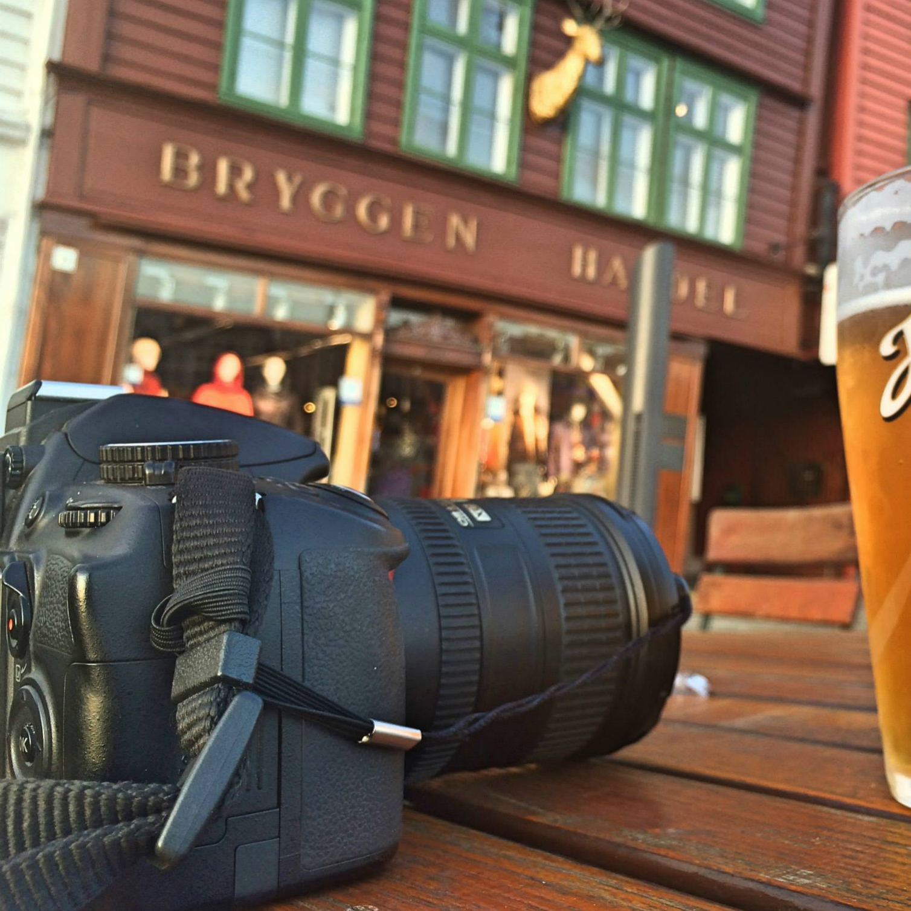

Berk[log]
Did you ever stop to think, and forget to start again?
-- A.A. Milne, Winnie-the-Pooh
Blog

Photography
Travel
About Me
DBC Blog
Week 1: Technical - Git and Github (November 22, 2014)
Week 1: Culture - Consumer vs. Creator Mindset (November 23, 2014)
Week 2: Technical - CSS Design (November 30, 2014)
Week 3: Culture - Gregorc Thinking Style (December 7, 2014)
Week 3: Technical - Arrays and Hashes (December 7, 2014)
Week 4: Culture - Convertible Notes (December 14, 2014)
Week 4: Technical - Map Enumerable Method (December 14, 2014)
Week 5: Technical - Intro to Ruby Classes (January 2, 2015)
Week 5: Culture - Pairing and Feedback (January 4, 2015)
Week 6: Technical - Blocks, Procs and Lambdas (January 11, 2015)
Week 6: Culture - Stereotype Threat (January 11, 2015)